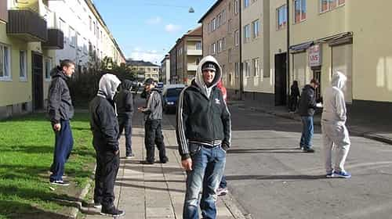

< < < Back
Is Sweden Slowly Becoming An Islamic Caliphate? – Return Of Kings
In French writer Michel Houellebecq’s novel Soumission (Submission) from 2015, the Muslim Brotherhood Party wins the presidential election in France. The French protagonist sees his country change to become more like Saudi Arabia than a European country.
While the story seems dystopic, every day it looks more and more like a realistic depiction of what’s going on in Europe. In Sweden I can see the changes happening in my own neighborhood, where immigrants (although they’re not all Muslims) already outnumber ethnic Swedes. I’m the one looking like a foreigner around here.
Some recent stories in the news illustrate how this country is changing. One example is that halal products are becoming more popular. Two big grocery store chains report that their sales of halal meat increased by 20 percent last year. Halal means that it’s permissible to use according to Islamic law. Some stores are now also selling halal branded makeup.
Schools have started serving halal meat to students, despite that some parents have expressed concern about it. One mother in Gävle called it “a slap in the face” when her son told her that his school now serves halal meat. Apparently this is something the schools see no reason to inform the parents about beforehand.
Immigrants are overrepresented in sexual assault statistics
But there are way more nefarious problems than schools teaching children Muslim eating habits. After the events on New Year’s Eve when women in several cities were assaulted by immigrant men, Swedish Police has gathered data on sexual assaults and a new report came out this week.
The results show that of those sexual assaults that have been committed by groups of men in public areas, most of the perpetrators have been “youths” seeking or having received asylum. When it comes to assaults at bath houses, which is a growing problem, 80 percent of perpetrators were immigrants.
Here’s one of many accounts made by molested girls, cited in the report:
A girl was surrounded on a train by eight men that got on board together. Two of the men started touching her thigh and up toward her crotch. She finally took out a pepper spray and they all stepped back. All of the men were over 25 and had foreign origin.
If that’s not enough to make you feel disgusted, here’s one more account:
A sixteen year old girl was attacked by a great number of boys who “were foreign and spoke poor Swedish” who tried to tear her clothes off. Some of them photographed the event. The girl was on her way home from a party with her boyfriend when she was assaulted. The boyfriend was a witness to the event.
The hatred toward ethnic Swedes finally gets the media’s attention

It’s well known that Muslim men look down on non-Muslim women. They treat Western girls walking around in slutty mini skirts differently then those “honorable” women who wear bags over their heads. They see Swedish girls dressing like whores and treat them as such. It’s a part of the “sinful” Swedish society, which they have a more or less concealed contempt for.
The tabloid Expressen recently published a reportage about the hatred that’s growing toward “svennar,” ethnic Swedes. In some neighborhoods in Sweden you will be harassed for being a “svenne.” If your hair isn’t dark as coal, you better watch your back.
One property owner talks about what Seved, a neighborhood in Malmö, is like today.
As long as you abide by their rules, they often won’t do anything to you. Otherwise they become violent, no matter what background they have. But they are much harder on the original Swedes. They don’t want Swedes in the area. They want a ghetto where they are kings. I don’t think the authorities dare to talk about it.
An anonymous Serbian man who used to live in that area has similar things to say.
What I noticed at first was that they didn’t attack people from the Middle East. They treated those with Swedish background the worst. One day I saw them throwing a rock that hit the ground just as a Swedish woman with a stroller passed by. Then I thought that it had gone way too far.
Many of the Swedes in Seved don’t want to talk to Expressen’s reporter. They’re too scared—and who can blame them. Osama Krayem, who’s been charged for his involvement in the terror attacks in Paris and Brussels, came from the same neighborhood.
Of course, some excuse this despicable behavior by referring to “structures” and “marginalization,” ignoring the fact that immigrants are the majority in many of these areas, and Swedes are the ones being marginalized. But let’s pretend that it’s all about Swedes being racist—it’s easier than facing the truth.
Houellebecq should have written about Sweden
Halal food, rampant sexual harassment, racism toward Swedes—these are three examples of how this country is changing because of immigration and multiculturalism. Many immigrants are nice people, sure. But these are just a few of the trends we are seeing, and they’re going to fundamentally change this country.
I don’t see any hope for it, honestly. Like I’ve said in previous articles, Swedes won’t fight for their country, their white guilt is enough to make them give it away for free. Personally, I’m looking to get out of here as soon as possible. Preferably to some place where the population is ethnically homogeneous and people don’t hate whites.
Michel Houellebecq imagined a future where France has become an Islamic state. I’d bet his prediction would come true sooner if he had written about Sweden.
 If you like this article and are concerned about the future of the Western world, check out Roosh's book Free Speech Isn't Free. It gives an inside look to how the globalist establishment is attempting to marginalize masculine men with a leftist agenda that promotes censorship, feminism, and sterility. It also shares key knowledge and tools that you can use to defend yourself against social justice attacks. Click here to learn more about the book. Your support will help maintain our operation.
If you like this article and are concerned about the future of the Western world, check out Roosh's book Free Speech Isn't Free. It gives an inside look to how the globalist establishment is attempting to marginalize masculine men with a leftist agenda that promotes censorship, feminism, and sterility. It also shares key knowledge and tools that you can use to defend yourself against social justice attacks. Click here to learn more about the book. Your support will help maintain our operation.
Read More: Sweden’s Fall To Leftism Is A Cautionary Tale For The Western World